# install.packages("remotes")
remotes::install_github("amirfarahmand0/voipred_dev")
library(voipred.dev)Introduction to voipred
1 Introduction
voipred (the package voipred.dev) evaluates clinical prediction models in a validation sample by their clinical utility, and quantifies how much the remaining uncertainty matters for the decision of whether to use them. It implements decision curve analysis based on net benefit (Vickers and Elkin 2006; Vickers, Van Calster, and Steyerberg 2019), for binary, survival and competing-risk outcomes (Vickers et al. 2008), in a Bayesian framework (Wynants et al. 2018; Cruz and Korthauer 2025), and value of information analysis for model validation (Sadatsafavi et al. 2023, 2025).
Net benefit. A prediction model is used to decide on treatment by treating the patients whose predicted risk is at or above a threshold . Its net benefit is the proportion of true positives minus the proportion of false positives, weighted by the odds of the threshold. The threshold expresses how the harm of an unnecessary treatment is weighed against the benefit of a necessary one: at , treating 9 patients unnecessarily is accepted to treat 1 patient who needs it. Net benefit is in units of true positives: 0.03 means 3 net true positives per 100 patients, i.e. 3 more patients correctly treated per 100, without more unnecessary treatments. A model is useful at a threshold where its net benefit is higher than that of both default strategies, treating everyone and treating no one; a decision curve shows this over a range of thresholds.
Value of information. A validation sample is finite, so the estimated net benefit is uncertain, and the strategy that looks best (a model, treating everyone or treating no one) may not be the best in the population. value of information analysis asks how much this uncertainty matters for the decision: the expected value of perfect information (EVPI) is the expected loss in net benefit due to it, and the expected value of sample information (EVSI) is the expected gain from a further validation study of a given size. They are complemented by the probability that a model is useful, P(useful), and the probability that each strategy is the best, P(best).
Workflow. The main function is nb_val(), which computes the net benefit of one or several models at a range of thresholds. Its result is used by the value of information functions:
| Step | Function | Result |
|---|---|---|
| Net benefit and decision curves | nb_val() |
net benefit of each model, of treating all and of treating none, at each threshold |
| Uncertainty for the current decision | evpi() |
EVPI; P(useful) (in $p_useful) and P(best) (in $p_best), from the same draws |
| Value of a future validation study | evsi() |
EVSI for each future sample size |
| Subgroups with different utilities |
nb_val(..., subgroup = ), summary(), k_value()
|
whether population net benefit can mislead when differs between subgroups (Wang et al. 2026) |
Every result has print() (a short table), summary() (the main findings), plot() and as.data.frame() (the full results) methods.
What you need. For each patient in the validation sample: the predicted risk of the event, from any model or software (or the fitted model itself), and the observed outcome: for a binary outcome, 0/1, TRUE/FALSE, or a factor with two levels; for a survival or competing-risk outcome, a time and a status.
How this article is organised. Section 4 shows the complete analysis for a binary outcome: net benefit and decision curves, prior information, and the value of information analysis. Section 5 shows the same analyses for a survival outcome, with what differs (censoring, and competing risks). The sections after them apply to both: subgroups (Section 6), reporting (Section 7) and credible intervals (Section 8); Section 9 summarises the choices.
2 Installation
voipred.dev is installed from GitHub:
It contains compiled (C++) code, so installing it needs a compiler (Rtools on Windows, the Xcode command line tools on macOS). Install or update it in a new R session: R cannot replace a package that is loaded.
3 Example data
GUSTO-I was an international randomized trial that compared four thrombolytic strategies in 40,830 patients with acute myocardial infarction (The GUSTO Investigators 1993). Its data are a standard example in prediction research, and are included in voipred.dev as gusto. The outcome is death within 30 days (day30, 0/1), which 7% of the patients had.
For illustration, we draw two random, non-overlapping samples: 5,000 patients to develop the models, and only 500 patients to validate them. The small validation sample makes the uncertainty, and so the value of information, visible; with thousands of patients it would be small. In practice, the validation data would come from another setting or period (external validation).
We fit two logistic regression models for 30-day mortality on the development sample: a “full” model with age, Killip class (the severity of heart failure), systolic blood pressure, pulse, previous myocardial infarction (pmi), location of the infarction (miloc) and sex, and a simpler model with age only. We then predict the risks of the validation patients:
fit_full <- glm(day30 ~ age + Killip + sysbp + pulse + pmi + miloc + sex,
family = binomial, data = dev)
fit_age <- glm(day30 ~ age, family = binomial, data = dev)
val$p_full <- predict(fit_full, newdata = val, type = "response")
val$p_age <- predict(fit_age, newdata = val, type = "response")
head(val[, c("day30", "age", "Killip", "p_full", "p_age")])
#> day30 age Killip p_full p_age
#> 16184 0 57.992 I 0.021351751 0.037659413
#> 38302 0 78.547 I 0.094460726 0.169293294
#> 1986 0 40.766 I 0.007360756 0.009721204
#> 17205 0 58.891 I 0.022462778 0.040364053
#> 28674 0 68.297 I 0.069787317 0.082148493
#> 40636 0 87.063 I 0.294718680 0.2876171064 Binary outcome
This section analyses the GUSTO-I example (Section 3), a binary outcome: the net benefit and decision curves of the models, prior information (which is for binary outcomes only), and the value of information analysis.
4.1 Net benefit and decision curves
4.1.1 Net benefit of one model
nb_val() takes the validation data, the predicted risks (predicted_risk: a vector, or the name of the column that holds them), the outcome and the thresholds. A binary outcome can be coded 0/1 (1 = event), as TRUE/FALSE (TRUE = event), or as a factor with two levels (the event is the level "1" if there is one, otherwise the second level, e.g. "dead" in factor(..., levels = c("alive", "dead"))); the results are the same. The thresholds should cover the range that is clinically reasonable for the decision; here, risks of 30-day death from 1% to 30%.
res_full <- nb_val(data = val,
predicted_risk = "p_full",
outcome = "day30",
thresholds = seq(0.01, 0.30, by = 0.01),
label = "Full")
res_full
#> Net benefit of Full: binary, n = 500, 26 events (5.2%), prior improper Beta(0, 0)
#>
#> threshold model NB_model NB_all NB_none delta_NB
#> 0.01 Full 0.04374 0.04242 0 0.00131
#> 0.02 Full 0.03869 0.03265 0 0.00604
#> 0.03 Full 0.03186 0.02268 0 0.00918
#> 0.04 Full 0.02317 0.01250 0 0.01067
#> 0.05 Full 0.02284 0.00211 0 0.02074
#> 0.06 Full 0.02004 -0.00851 0 0.02004
#> 0.07 Full 0.01789 -0.01935 0 0.01789
#> 0.08 Full 0.01887 -0.03043 0 0.01887
#> 0.09 Full 0.01437 -0.04176 0 0.01437
#> 0.10 Full 0.01533 -0.05333 0 0.01533
#> # 20 more thresholds; use summary() or as.data.frame()The header line shows what was evaluated. “prior improper Beta(0, 0)” is the default prior: no prior information is used, the estimates come from the data alone, and the net benefit is the usual one of decision curve analysis (priors are optional, see Section 4.2). The table has one row per threshold (and per model) with:
-
NB_model: the net benefit of treating the patients whose predicted risk is at or above the threshold; -
NB_allandNB_none: the net benefit of treating everyone, and of treating no one (always 0); -
delta_NB: , the gain of the model over the best default strategy; the model is useful where it is positive.
summary() gives the main findings: the best strategy along the thresholds, the largest gain of the model, and its sensitivity and specificity, at all thresholds or at those chosen with thresholds:
summary(res_full, thresholds = c(0.02, 0.05, 0.1, 0.2))
#> Net benefit of Full: binary, n = 500, 26 events (5.2%), prior improper Beta(0, 0)
#> Best strategy: Full 0.01-0.30
#> Largest delta_NB: Full 0.02074 at 0.05
#>
#> threshold model Se Sp NB_model NB_all NB_none delta_NB
#> 0.02 Full 1.000 0.312 0.03869 0.0327 0 0.00604
#> 0.05 Full 0.769 0.656 0.02284 0.0021 0 0.02074
#> 0.10 Full 0.577 0.861 0.01533 -0.0533 0 0.01533
#> 0.20 Full 0.269 0.964 0.00550 -0.1850 0 0.00550plot() draws the decision curve, or with type = "delta", the gain of the model over the best default strategy:

The full model has a higher net benefit than both default strategies at every threshold from 1% to 30% (delta_NB > 0), so using it would be better than treating everyone or no one at any of these thresholds. Its largest gain is 0.0207 at a threshold of 5%: about 2.1 more net true positives per 100 patients than the best default strategy. At the lowest thresholds the gain is small, because treating everyone is almost as good when nearly all patients would be treated anyway.
4.1.2 Comparing models
To compare models, give them to one call of nb_val() as a list, one element per model. Every other argument applies to all of them, and every result compares them:
res <- nb_val(data = val,
predicted_risk = list(Full = "p_full", `Age only` = "p_age"),
outcome = "day30",
thresholds = seq(0.01, 0.30, by = 0.01))
summary(res, thresholds = c(0.02, 0.05, 0.1, 0.2))
#> Net benefit of Full, Age only: binary, n = 500, 26 events (5.2%), prior improper Beta(0, 0)
#> Best strategy: Full 0.01-0.03, Age only 0.04-0.07, Full 0.08-0.30
#> Largest delta_NB: Full 0.02074 at 0.05; Age only 0.02074 at 0.05
#>
#> threshold model Se Sp NB_model NB_all NB_none delta_NB
#> 0.02 Full 1.000 0.312 0.03869 0.0327 0 0.00604
#> 0.02 Age only 0.962 0.190 0.03433 0.0327 0 0.00167
#> 0.05 Full 0.769 0.656 0.02284 0.0021 0 0.02074
#> 0.05 Age only 0.885 0.536 0.02284 0.0021 0 0.02074
#> 0.10 Full 0.577 0.861 0.01533 -0.0533 0 0.01533
#> 0.10 Age only 0.615 0.800 0.01089 -0.0533 0 0.01089
#> 0.20 Full 0.269 0.964 0.00550 -0.1850 0 0.00550
#> 0.20 Age only 0.077 0.964 -0.00450 -0.1850 0 -0.00450
plot(res)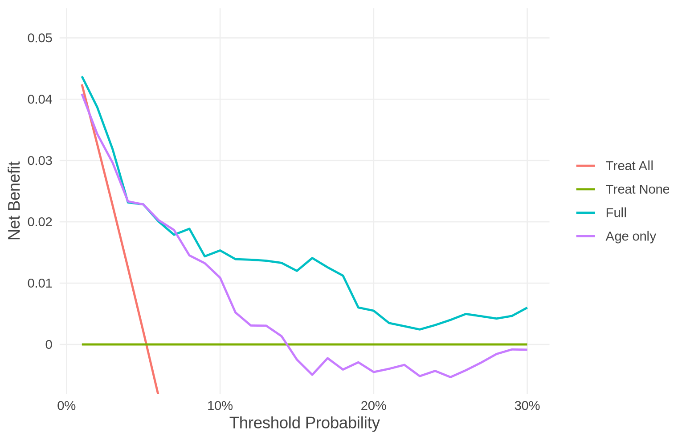
plot(res, type = "delta")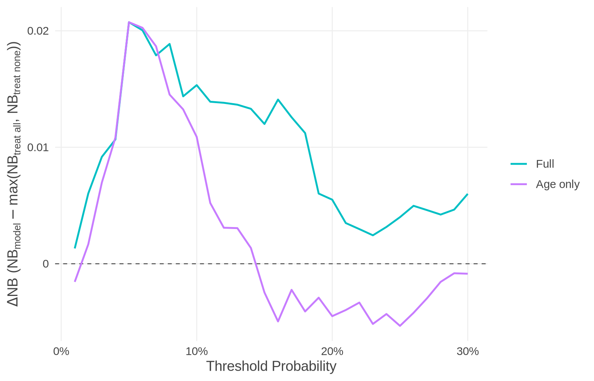
The age-only model is useful at 13 of the 30 thresholds, from 2% to 14%, while the full model, which also uses the clinical predictors, is useful at all of them. Around 5%, the two models have almost the same net benefit, and the best strategy switches between them; with only 500 patients, the data may not tell them apart there. Whether such differences are real is what the value of information analysis (Section 4.3) quantifies.
Giving the models. predicted_risk takes, for one model, a vector of risks (val$p_full), the name of the column of data that holds them ("p_full"), or the fitted model (fit_full), from which voipred predicts the risks; for several models, a list() of these, mixed freely, e.g. list(Full = fit_full, Age = "p_age") (use list(), not c(), which joins vectors and takes fitted models apart). The common models (glm, coxph, survreg, random forests, …) are predicted from automatically; for any other, give predict_function (see ?nb_val). Each model is labelled by its name in the list, otherwise by the column name or the name in the call. Results computed separately, on the same data and thresholds, can be combined with c().
4.2 Prior information (the Bayesian framework)
voipred.dev computes the net benefit in a Bayesian framework. By default it uses no prior information, so the estimates are those of standard decision curve analysis, and the uncertainty is that of the data alone (for a binary outcome, the posterior draws then have exactly the distribution of the Bayesian bootstrap, the approach of Sadatsafavi et al. (2023)). Prior information can be added for binary outcomes with the prior argument of nb_val():
| Prior | What it assumes |
|---|---|
nb_improper() (default) |
no prior information: Beta(0, 0) for prevalence, sensitivity and specificity |
nb_uniform(), nb_jeffreys()
|
Beta(1, 1) or Beta(0.5, 0.5) for all three |
nb_beta() |
your own Beta priors, e.g. on the prevalence from earlier studies; the parts not given are Beta(0, 0) |
nb_informative() |
the informative prior of bayesDCA (Cruz and Korthauer 2025), whose priors on sensitivity and specificity change with the threshold |
When to use prior information. It matters when the effective sample size is small, for example when most predicted risks are on one side of a threshold, so that few patients are treated (or untreated) there (Cruz and Korthauer 2025). At other thresholds, and with reasonably large samples, priors change the results little.
The informative prior. Every model treats everyone at a threshold of 0 (sensitivity 1, specificity 0) and no one at a threshold above all predicted risks (sensitivity 0, specificity 1). Near the ends of the decision curve, where the data say little, nb_informative() states, with little weight (about 5 patients), that the model behaves like treat all at the lowest threshold and like treat none at the highest, and stays vague in between; the prevalence has a uniform prior. Cruz and Korthauer (2025) found that it keeps EVPI decreasing with the sample size in small samples. It reproduces bayesDCA’s construction and defaults, and is for binary outcomes only; the prior at a threshold depends on the range of thresholds given to nb_val().
res_inf <- nb_val(data = val,
predicted_risk = list(Full = "p_full", `Age only` = "p_age"),
outcome = "day30",
thresholds = seq(0.01, 0.30, by = 0.01),
prior = nb_informative())
res_inf$prior_shapes[c(1, 5, 10, 20, 30), ] # the prior at some thresholds
#> threshold se_a se_b sp_a sp_b prev_a prev_b
#> 1 0.01 4.950000 0.0500000 0.0500000 4.950000 1 1
#> 5 0.05 2.171302 0.9825444 0.9825444 2.171302 1 1
#> 10 0.10 1.000000 1.0000000 1.0000000 1.000000 1 1
#> 20 0.20 1.000000 1.0000000 1.0000000 1.000000 1 1
#> 30 0.30 0.050000 4.9500000 4.9500000 0.050000 1 1Reporting the results with and without the prior shows how much it matters; Section 4.3.5 compares the EVPI under the two priors.
Common concerns.
-
Is the Bayesian analysis complicated? With the default prior,
nb_val()gives the usual net benefit; the Bayesian framework only represents its uncertainty for the value of information functions. - Do I have to choose a prior? No; priors are an option for small effective sample sizes.
- Do I have to monitor convergence? No: the draws are exact (closed form, or the Bayesian bootstrap), with no MCMC.
- Will the prior make the results subjective? With the default prior, the results are those of standard decision curve analysis. A prior matters only where the data are scarce, and its influence can be shown by reporting the results with and without it.
4.3 Value of information analysis
4.3.1 How the uncertainty is represented
The value of information functions take the result of nb_val() and draw the net benefit of every strategy n_sim times from its distribution given the validation data; all their results are computed from these draws. For a binary outcome, the draws come from the posterior of the prevalence, sensitivity and specificity, which is known in closed form (Beta distributions; a Dirichlet over the patterns of treatment when several models are compared), with the prior of nb_val(). For survival and competing-risk outcomes they are the Bayesian bootstrap (Rubin 1981): random weights on the patients, with the net benefit recomputed in each draw. There is no MCMC, so there is no convergence to monitor. When models are compared, all of them are evaluated on the same patients within each draw, so their correlation is preserved. The draws are random: set a seed to reproduce them.
4.3.2 EVPI, P(useful) and P(best)
evpi() computes three measures at each threshold from one set of draws:
set.seed(10)
e <- evpi(res, n_sim = 5000)
e
#> EVPI: Full, Age only; binary, n = 500, prior improper Beta(0, 0), 5000 posterior draws
#>
#> threshold EVPI rEVPI
#> 0.01 0.000000 1.000
#> 0.02 0.000000 1.000
#> 0.03 0.000298 1.033
#> 0.04 0.002024 1.187
#> 0.05 0.002096 1.101
#> 0.06 0.002193 1.108
#> 0.07 0.001934 1.103
#> 0.08 0.000981 1.052
#> 0.09 0.001957 1.135
#> 0.10 0.000940 1.061
#> # 20 more rows; use summary() or as.data.frame()
#> # From the same draws: P(useful) in $p_useful, P(best) in $p_bestEVPI. With the net benefit of strategy , choosing the strategy with the highest expected net benefit gives ; knowing the true net benefits, one would always choose the truly best strategy, which gives . EVPI is the difference, the expected loss in net benefit due to uncertainty. It is 0 when the best strategy is certain. The relative EVPI (rEVPI) compares the gain from perfect information with the gain from using the model(s) over the best default strategy: 1.10 means that perfect information would add 10% to it.
summary(e, thresholds = c(0.02, 0.05, 0.1, 0.2))
#> EVPI: Full, Age only; binary, n = 500, prior improper Beta(0, 0), 5000 posterior draws
#> EVPI > 0 at 0.03-0.30; largest 0.002193 at 0.06
#>
#> threshold EVPI rEVPI
#> 0.02 0.000000 1.000
#> 0.05 0.002096 1.101
#> 0.10 0.000940 1.061
#> 0.20 0.000442 1.082
plot(e)
plot(e, type = "relative") draws the relative EVPI, which puts EVPI on a scale comparable across thresholds; the dashed line at 1 means no value of perfect information:
plot(e, type = "relative")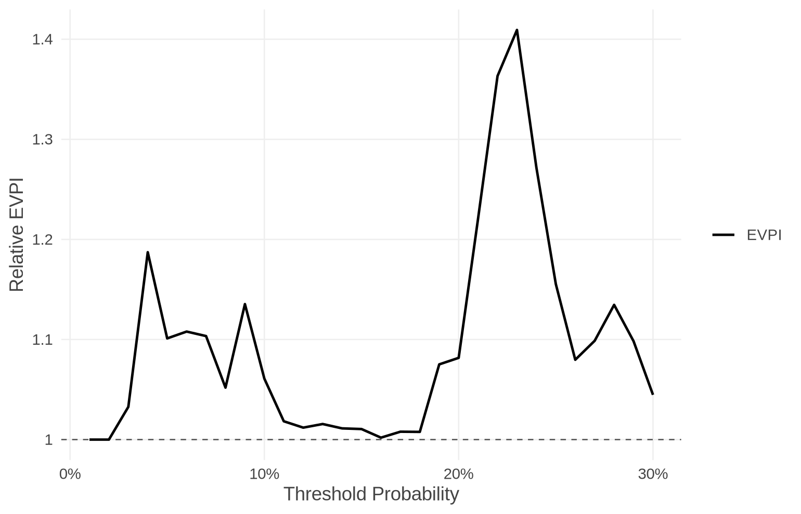
EVPI is largest, 0.00219, at a threshold of 6%: about 219 net true positives per 100,000 patients are expected to be lost because of the uncertainty in this validation sample of 500 patients. Whether this is worth a further study depends on the number of patients who would be affected by the decision, and on the cost of the study.
P(useful) is the probability that each model has a higher net benefit than both default strategies, the share of draws in which it does. It compares each model only with the default strategies:
e$p_useful
#> P(useful): Full, Age only; binary, n = 500, prior improper Beta(0, 0), 5000 posterior draws
#>
#> threshold model p_useful
#> 0.01 Full 1.000
#> 0.01 Age only 0.197
#> 0.02 Full 1.000
#> 0.02 Age only 0.848
#> 0.03 Full 0.986
#> 0.03 Age only 0.990
#> 0.04 Full 0.964
#> 0.04 Age only 0.987
#> 0.05 Full 0.998
#> 0.05 Age only 0.996
#> 0.06 Full 0.999
#> 0.06 Age only 0.992
#> 0.07 Full 0.994
#> 0.07 Age only 0.990
#> 0.08 Full 0.996
#> 0.08 Age only 0.961
#> 0.09 Full 0.981
#> 0.09 Age only 0.948
#> 0.10 Full 0.989
#> 0.10 Age only 0.919
#> # 20 more thresholds; use summary() or as.data.frame()
summary(e$p_useful)
#> P(useful): Full, Age only; binary, n = 500, prior improper Beta(0, 0), 5000 posterior draws
#> Thresholds where the probability that the model is useful is:
#>
#> model P > 0.95 0.5 to 0.95 P < 0.5
#> Full 0.01-0.18 0.19-0.30 -
#> Age only 0.03-0.08 0.02, 0.09-0.14 0.01, 0.15-0.30
plot(e, type = "p_useful")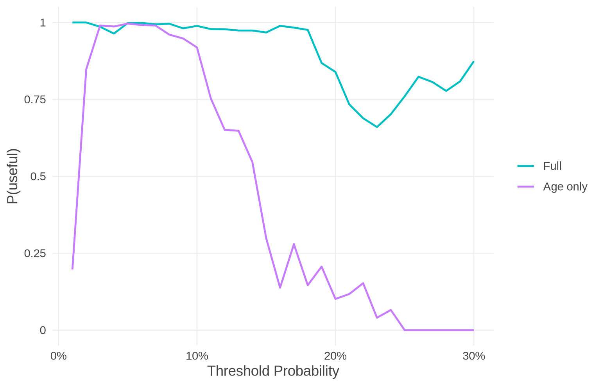
summary() gives, for each model, the thresholds where P(useful) is above 0.95, between 0.5 and 0.95, and below 0.5. A P(useful) near 0.5 means that the data give no evidence either way: the model’s net benefit is about that of the best default strategy.
P(best) is the probability that each strategy (each model, treat all, treat none) has the highest net benefit; the probabilities add up to 1 at each threshold. It compares the models with each other:
summary(e$p_best, thresholds = c(0.02, 0.05, 0.1))
#> P(best): Full, Age only; binary, n = 500, prior improper Beta(0, 0), 5000 posterior draws
#> Most likely best: Full 0.01-0.06, Age only 0.07, Full 0.08-0.30
#>
#> threshold strategy p_best
#> 0.02 Full 1.000
#> 0.02 Age only 0.000
#> 0.02 Treat All 0.000
#> 0.02 Treat None 0.000
#> 0.05 Full 0.523
#> 0.05 Age only 0.476
#> 0.05 Treat All 0.000
#> 0.05 Treat None 0.000
#> 0.10 Full 0.768
#> 0.10 Age only 0.224
#> 0.10 Treat All 0.000
#> 0.10 Treat None 0.007
plot(e, type = "p_best")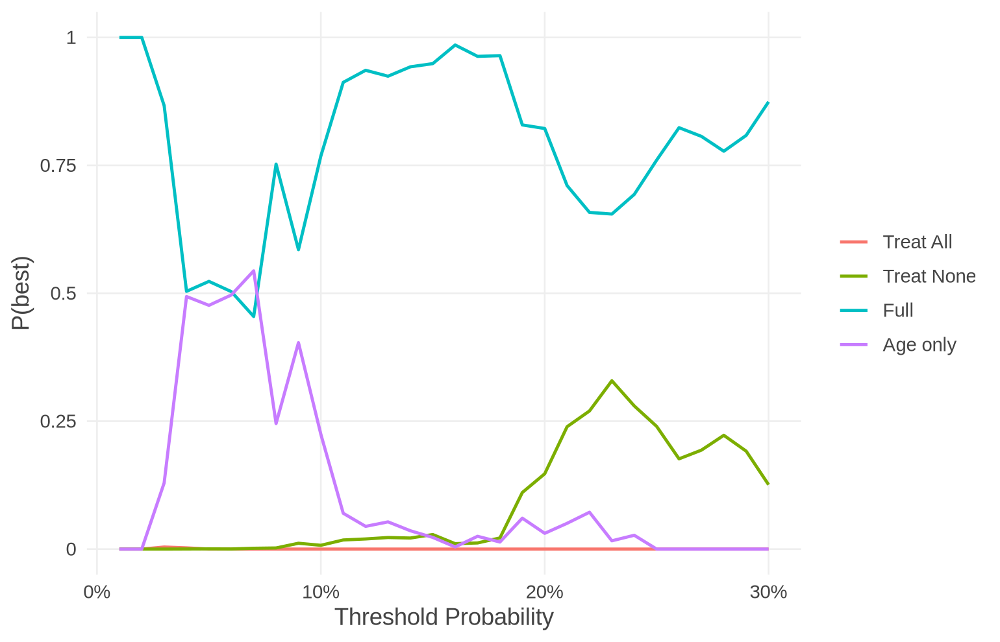
At 6%, where EVPI is largest, the full model is the best in 50% of the draws and the age-only model in 50%: the data cannot tell the two models apart, which is why perfect information has most value there.
4.3.3 EVSI: the value of a further validation study
The expected gain in net benefit from a future validation study of patients (future_n), added to the current sample, before choosing the strategy, is quantified by the expected value of sample information (EVSI). It is between 0 and EVPI, and approaches EVPI as grows:
set.seed(20)
o <- evsi(res, future_n = c(250, 500, 1000, 2000, 4000), n_sim = 2000)
summary(o)
#> EVSI: Full, Age only; binary, n = 500, 2000 posterior draws
#> Before the future study (as for EVPI): prior improper Beta(0, 0), updated with the validation data (n = 500)
#> Future study: 250, 500, 1,000, 2,000 or 4,000 more patients, drawn from that distribution; then the prior is updated with the validation data and the future study together
#> EVSI / EVPI at the thresholds with the largest EVPI:
#>
#> threshold future_n EVSI EVPI EVSI / EVPI
#> 0.04 250 0.001070 0.002009 53%
#> 0.04 500 0.001363 0.002009 68%
#> 0.04 1,000 0.001629 0.002009 81%
#> 0.04 2,000 0.001757 0.002009 87%
#> 0.04 4,000 0.001882 0.002009 94%
#> 0.05 250 0.001060 0.001996 53%
#> 0.05 500 0.001357 0.001996 68%
#> 0.05 1,000 0.001594 0.001996 80%
#> 0.05 2,000 0.001750 0.001996 88%
#> 0.05 4,000 0.001870 0.001996 94%
#> 0.06 250 0.001229 0.002135 58%
#> 0.06 500 0.001463 0.002135 69%
#> 0.06 1,000 0.001728 0.002135 81%
#> 0.06 2,000 0.001898 0.002135 89%
#> 0.06 4,000 0.002001 0.002135 94%
plot(o, thresholds = c(0.02, 0.05, 0.1, 0.2))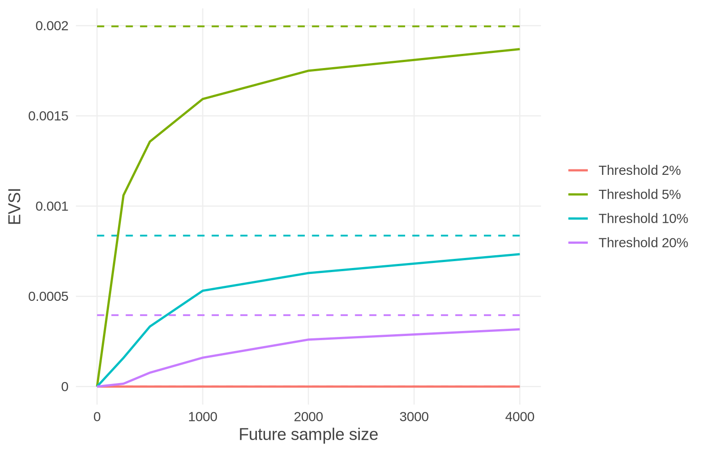
The header states the information at the two moments that EVSI compares: before the future study, the prior updated with the validation data (as for EVPI), and after it, with the future study added. summary() gives the share of EVPI that a study of each size would recover. At 6%, a further study of 500 patients would recover about 69% of EVPI, and one of 4,000 patients about 94%: most of the value of perfect information can be obtained with a moderate study, with diminishing returns beyond it. Multiplied by the number of patients affected by the decision, EVSI can be compared with the cost of the study.
4.3.4 EVPI and EVSI below the decision curve
plot() of the result of nb_val() draws EVPI and EVSI in a panel below the decision curve, so that the net benefit and the value of information can be read together:
plot(res, evpi = e, evsi = o)
4.3.5 Small effective sample sizes
Where few patients are on one side of a threshold (typically at very low or very high thresholds), the data say little, and the value of information measures can behave unexpectedly; for example, EVPI may not decrease steadily as the sample size grows (Sadatsafavi et al. 2023). Interpret them with care there; prior information (Section 4.2) can stabilise them.
For example, with the informative prior of Section 4.2:
set.seed(10)
e_inf <- evpi(res_inf, n_sim = 5000)
round(data.frame(threshold = ee$threshold,
EVPI_default = ee$EVPI,
EVPI_informative = e_inf$estimates$EVPI)[c(1, 2, 5, 10, 20, 30), ], 5)
#> threshold EVPI_default EVPI_informative
#> 1 0.01 0.00000 0.00003
#> 2 0.02 0.00000 0.00003
#> 5 0.05 0.00210 0.00187
#> 10 0.10 0.00094 0.00094
#> 20 0.20 0.00044 0.00035
#> 30 0.30 0.00027 0.00038With 500 patients, the two priors give similar EVPI, except near the ends of the range, where the informative prior expresses its assumptions.
5 Survival outcome
The same analyses for a survival outcome, where the event is the event by a time horizon and some patients are censored before it: net benefit and decision curves (with Kaplan-Meier, or with cIPCW when censoring is informative), the value of information analysis, and competing risks. The methods are those of Section 4; only what differs is explained here.
5.1 Net benefit and decision curves
For a survival outcome, the event is the event by a time horizon, and the predicted risks are the risks of the event by that horizon. We use the Rotterdam breast cancer data (rotterdam, from the survival package): 2,982 women with primary breast cancer, used by Royston and Altman (2013) to illustrate the validation of survival models. The outcome is death, and we evaluate the risk of death by 5 years. As before, the data are split at random, here into 1,500 women to fit the models and 600 to validate them.
rott <- rotterdam
rott$years <- rott$dtime / 365.25
set.seed(2023)
j <- sample(nrow(rott))
dev_s <- rott[j[1:1500], ]
val_s <- rott[j[1501:2100], ]
fit_cox <- coxph(Surv(years, death) ~ age + size + nodes + grade + hormon + chemo,
data = dev_s)
fit_wb <- survreg(Surv(years, death) ~ age + size + nodes + grade + hormon + chemo,
data = dev_s, dist = "weibull")The outcome is given with Surv(), and horizon is required. Here the fitted models are given, and voipred predicts each patient’s risk by 5 years from them:
res_s <- nb_val(data = val_s,
predicted_risk = list(Cox = fit_cox, Weibull = fit_wb),
outcome = ~ Surv(years, death),
horizon = 5,
thresholds = seq(0.05, 0.60, by = 0.01))
summary(res_s, thresholds = c(0.1, 0.2, 0.3, 0.4))
#> Net benefit of Cox, Weibull: survival, horizon 5, n = 600, risk by horizon 26.6%, censoring KM, prior improper Beta(0, 0)
#> Best strategy: treat all 0.05-0.07, Weibull 0.08-0.10, Cox 0.11, Weibull 0.12, Cox 0.13-0.14, Weibull 0.15-0.17, Cox 0.18-0.21, Weibull 0.22-0.25, Cox 0.26-0.29, Weibull 0.30-0.31, Cox 0.32-0.34, Weibull 0.35-0.36, Cox 0.37-0.44, Weibull 0.45, Cox 0.46, Weibull 0.47, Cox 0.48-0.54, Weibull 0.55-0.60
#> Largest delta_NB: Cox 0.09297 at 0.27; Weibull 0.08228 at 0.27
#>
#> threshold model Se Sp NB_model NB_all NB_none delta_NB
#> 0.1 Cox 1.000 0.016 0.1859 0.1845 0 0.00137
#> 0.1 Weibull 1.000 0.052 0.1890 0.1845 0 0.00448
#> 0.2 Cox 0.778 0.524 0.1198 0.0826 0 0.03715
#> 0.2 Weibull 0.712 0.575 0.1115 0.0826 0 0.02894
#> 0.3 Cox 0.523 0.797 0.0752 -0.0485 0 0.07523
#> 0.3 Weibull 0.465 0.853 0.0776 -0.0485 0 0.07760
#> 0.4 Cox 0.320 0.925 0.0486 -0.2232 0 0.04855
#> 0.4 Weibull 0.276 0.941 0.0448 -0.2232 0 0.04483
plot(res_s)
The two models perform very similarly: the best strategy switches between them from one threshold to the next, and their largest gains are 0.093 (Cox) and 0.082 (Weibull). Both are better than the default strategies above 8%; below it, with 27% of the women dying within 5 years, treating everyone is as good.
By default, censoring is handled with Kaplan-Meier estimates (Vickers et al. 2008): the risk of the event by the horizon, overall and among the treated patients. This assumes that censoring is independent of the outcome.
5.2 Informative censoring: cIPCW
When censoring may depend on patient characteristics that are also related to the outcome (for example when older or sicker patients are more often lost to follow-up, or when the length of follow-up changes with calendar time while the case mix changes too), Kaplan-Meier can give a biased net benefit. Conditional inverse probability of censoring weighting (cIPCW) allows censoring to depend on covariates (Farahmand et al. 2026). Give the covariates that censoring may depend on: voipred fits a Cox model of the censoring times of the validation data on them, and weights the patients by the inverse of their probability of remaining uncensored (truncated at 0.02, i.e. weights of at most 50):
res_ci <- nb_val(data = val_s,
predicted_risk = list(Cox = fit_cox, Weibull = fit_wb),
outcome = ~ Surv(years, death),
horizon = 5,
thresholds = seq(0.05, 0.60, by = 0.01),
cipcw = ~ age + nodes + grade)
summary(res_ci, thresholds = c(0.1, 0.2, 0.3, 0.4))
#> Net benefit of Cox, Weibull: survival, horizon 5, n = 600, risk by horizon 26.6%, censoring cIPCW (coxph), prior improper Beta(0, 0)
#> Best strategy: treat all 0.05-0.07, Weibull 0.08-0.10, Cox 0.11, Weibull 0.12, Cox 0.13-0.14, Weibull 0.15-0.17, Cox 0.18-0.21, Weibull 0.22-0.25, Cox 0.26-0.29, Weibull 0.30-0.31, Cox 0.32-0.34, Weibull 0.35-0.36, Cox 0.37-0.44, Weibull 0.45-0.47, Cox 0.48-0.54, Weibull 0.55-0.60
#> Largest delta_NB: Cox 0.0926 at 0.27; Weibull 0.08241 at 0.27
#>
#> threshold model Se Sp NB_model NB_all NB_none delta_NB
#> 0.1 Cox 1.000 0.017 0.1859 0.1845 0 0.00139
#> 0.1 Weibull 1.000 0.054 0.1888 0.1845 0 0.00437
#> 0.2 Cox 0.776 0.525 0.1192 0.0825 0 0.03663
#> 0.2 Weibull 0.712 0.574 0.1112 0.0825 0 0.02863
#> 0.3 Cox 0.520 0.801 0.0757 -0.0485 0 0.07569
#> 0.3 Weibull 0.462 0.857 0.0779 -0.0485 0 0.07789
#> 0.4 Cox 0.317 0.925 0.0474 -0.2233 0 0.04741
#> 0.4 Weibull 0.272 0.942 0.0440 -0.2233 0 0.04400Here the results with cIPCW are close to those with Kaplan-Meier (the net benefits differ by at most 0.0014), so censoring related to these covariates does not change the conclusions. When censoring is purely administrative (the end of the study), Kaplan-Meier is fine. The censoring model does not have to be a Cox model: any survival model fitted to the censoring times can be given (cipcw = <model>), e.g. a parametric model or a random survival forest; cipcw_control() sets the other options (truncation, given weights, how to refit the model). See ?cipcw_control, which includes an example with a random survival forest.
5.3 Value of information analysis
The value of information functions work in the same way. Their draws are the Bayesian bootstrap; with cIPCW, the censoring model is refitted in every draw, which takes longer.
set.seed(30)
e_s <- evpi(res_s, n_sim = 1000)
summary(e_s, thresholds = c(0.1, 0.2, 0.3, 0.4))
#> EVPI: Cox, Weibull; survival, horizon 5, n = 600, censoring KM, prior improper Beta(0, 0), 1000 Bayesian bootstrap draws
#> EVPI > 0 at 0.11-0.41, 0.43-0.60; largest 0.002571 at 0.46
#>
#> threshold EVPI rEVPI
#> 0.1 0.000000 1.000
#> 0.2 0.000098 1.003
#> 0.3 0.001575 1.020
#> 0.4 0.000662 1.014
plot(res_s, evpi = e_s)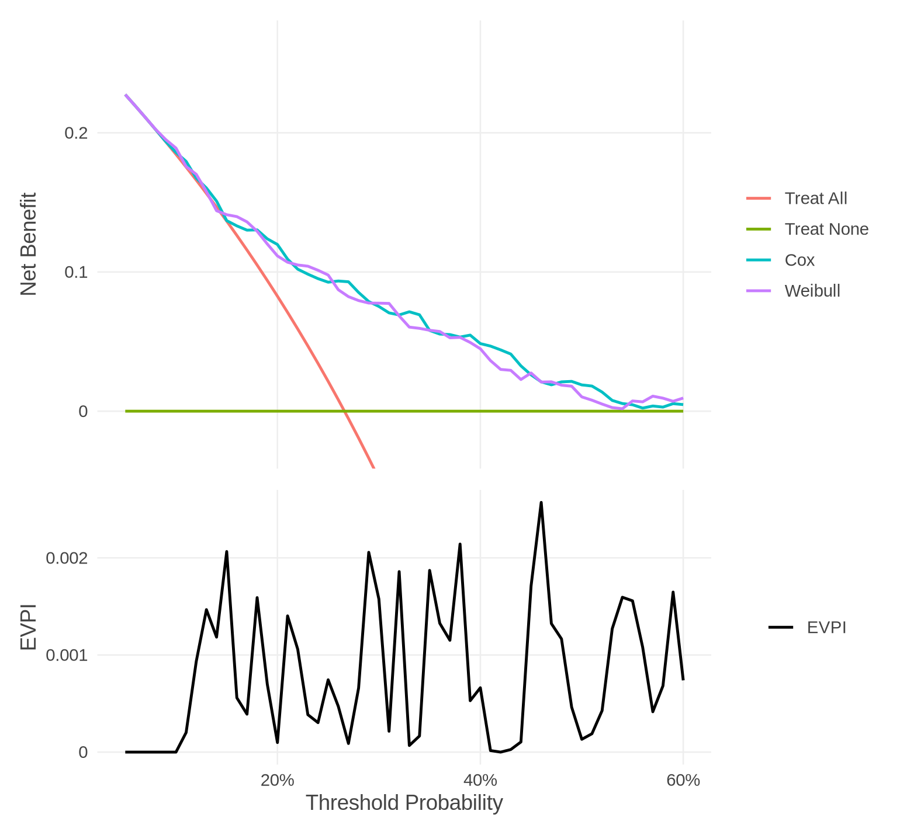
EVPI is positive over most thresholds, because the two models are so close that the data rarely show which one is best; it is largest, 0.00257, at 46% (about 257 net true positives per 100,000 patients), which is small compared with the gain of either model over the default strategies (up to 0.093): the uncertainty is mostly about which of two almost equally good models to use.
5.4 Competing risks
With competing events, the status is a factor whose first level is censoring, and cause names the event of interest; the net benefit is computed from the cumulative incidence of that cause (Aalen-Johansen, or cIPCW). Here, the risk of recurrence by 5 years, with death before recurrence as a competing event, from a cause-specific Cox model:
crdat <- function(d) {
d$cr_time <- ifelse(d$recur == 1, d$rtime, d$dtime) / 365.25
d$cr_code <- ifelse(d$recur == 1, 1, ifelse(d$death == 1, 2, 0))
d$cr_status <- factor(d$cr_code, 0:2, c("censored", "recurrence", "death"))
d
}
dev_cr <- crdat(dev_s)
val_cr <- crdat(val_s)
fit_csc <- riskRegression::CSC(prodlim::Hist(cr_time, cr_code) ~ age + size + nodes + grade,
data = dev_cr)
res_cr <- nb_val(data = val_cr,
predicted_risk = fit_csc,
outcome = ~ Surv(cr_time, cr_status),
horizon = 5,
cause = "recurrence",
thresholds = seq(0.05, 0.60, by = 0.01),
label = "Cause-specific Cox")
summary(res_cr, thresholds = c(0.2, 0.3, 0.4, 0.5))
#> Net benefit of Cause-specific Cox: competing risks (cause recurrence), horizon 5, n = 600, risk by horizon 39.9%, censoring KM, prior improper Beta(0, 0)
#> Best strategy: treat all 0.05-0.17, Cause-specific Cox 0.18-0.60
#> Largest delta_NB: Cause-specific Cox 0.107 at 0.40
#>
#> threshold model Se Sp NB_model NB_all NB_none delta_NB
#> 0.2 Cause-specific Cox 1.000 0.014 0.2509 0.2489 0 0.0021
#> 0.3 Cause-specific Cox 0.911 0.290 0.1806 0.1416 0 0.0391
#> 0.4 Cause-specific Cox 0.595 0.674 0.1070 -0.0015 0 0.1070
#> 0.5 Cause-specific Cox 0.313 0.891 0.0595 -0.2018 0 0.0595With 40% of the women having a recurrence within 5 years, treating everyone is best at low thresholds; the model is useful from 18%, with its largest gain, 0.107, at 40%.
6 Subgroups: utility heterogeneity
This section applies to binary and survival outcomes alike.
6.1 The idea
Net benefit is expressed in units of , the incremental utility of a true positive relative to a false negative (written ): within a population, the difference in utility between two strategies is , so net benefit and utility favour the same strategy. When the population consists of subgroups whose differs, for example because a treatment is more effective in men than in women, this no longer holds (Wang et al. 2026). With subgroups of sizes , the population difference in net benefit weights the subgroup differences by size only, whereas the population difference in utility also weights them by : The two can therefore favour different strategies: population net benefit can favour the model while population utility favours the comparator, or the reverse. This is possible only when the subgroup do not all have the same sign. For two subgroups, the combinations of for which it happens form the inconsistency region, between the lines and , and the K-value is the critical ratio at which the conclusion changes: when , population net benefit and utility favour different strategies if (and if when ). Like the E-value for unmeasured confounding, it measures how robust the population-level conclusion is (Wang et al. 2026).
Wang et al. (2026) propose a framework in three steps, which voipred.dev implements:
| Step | Framework of Wang et al. (2026) | In voipred.dev |
|---|---|---|
| 1 | Decision curve analysis within relevant subgroups | nb_val(..., subgroup = ) |
| 2 | Do the subgroup have the same sign? If so, differences in cannot change the population conclusion | summary(res) |
| 3 | If not: with external evidence on , is in the inconsistency region? Without it, the K-value. For more than two subgroups: plausible values or ranges of the |
summary(res, k = ), plot(res, type = "region")
|
The evidence on comes from the treatment effect: for a diagnostic model, the effect of treatment among people with the target disease; for a prognostic model, under the assumptions of Wang et al. (2026), the relative risk reduction (RRR) of the treatment in each subgroup.
Notation. In the framework, is the difference in net benefit between the model and a comparator that is the same strategy in every subgroup (by default treat all), so that the sums above compare two population strategies. voipred.dev calls it diff_NB (diff_NB_<subgroup>, and diff_NB_population for the size-weighted sum), to keep it apart from delta_NB, which compares the model with the best default strategy chosen in each group. The utility-weighted difference is diff_utility.
6.2 Subgroups in GUSTO-I: age
Subgroup estimates need more data than population estimates, so for this section we validate the full model on 5,000 patients (the next 5,000 in the random order of Section 3), with two subgroups: patients younger than 65 years, and those 65 and over. subgroup takes the name of a column of data (as here), several column names (their combinations), or a factor or vector with one subgroup per patient.
val_age <- gusto[i[5001:10000], ]
val_age$p_full <- predict(fit_full, newdata = val_age, type = "response")
val_age$age_group <- factor(val_age$age >= 65, labels = c("under 65", "65 and over"))
res_age <- nb_val(data = val_age,
predicted_risk = "p_full",
outcome = "day30",
thresholds = seq(0.01, 0.30, by = 0.01),
label = "Full",
subgroup = "age_group")Steps 1 and 2. summary() adds, for each threshold, the subgroup differences in net benefit against treat all, their size-weighted sum, and whether they have the same sign; plot(type = "subgroups") draws them:
summary(res_age, thresholds = c(0.02, 0.03, 0.04, 0.05, 0.06, 0.10))
#> Net benefit of Full: binary, n = 5000, 339 events (6.8%), prior improper Beta(0, 0)
#> Best strategy: Full 0.01-0.30
#> Largest delta_NB: Full 0.02939 at 0.07
#>
#> threshold model Se Sp NB_model NB_all NB_none delta_NB
#> 0.02 Full 0.962 0.324 0.05234 0.04878 0 0.00356
#> 0.03 Full 0.914 0.463 0.04653 0.03897 0 0.00756
#> 0.04 Full 0.858 0.571 0.04153 0.02896 0 0.01258
#> 0.05 Full 0.805 0.644 0.03716 0.01874 0 0.01842
#> 0.06 Full 0.749 0.711 0.03360 0.00830 0 0.02531
#> 0.10 Full 0.602 0.845 0.02478 -0.03578 0 0.02478
#>
#> Subgroups (age_group): under 65 (61%), 65 and over (39%); difference in net benefit (diff_NB) against Treat All
#> opposite signs at 0.03-0.06
#> K-value (k_under 65 / k_65 and over): 0.002349 to 0.03899
#>
#> threshold model diff_NB_under 65 diff_NB_65 and over diff_NB_population
#> 0.02 Full 0.00568 0.00026 0.00356
#> 0.03 Full 0.01249 -0.00013 0.00756
#> 0.04 Full 0.02108 -0.00070 0.01258
#> 0.05 Full 0.03144 -0.00191 0.01842
#> 0.06 Full 0.04161 -0.00015 0.02531
#> 0.10 Full 0.08501 0.02237 0.06056
#> signs K
#> same NA
#> opposite 0.00677
#> opposite 0.02140
#> opposite 0.03899
#> opposite 0.00235
#> same NA
plot(res_age, type = "subgroups")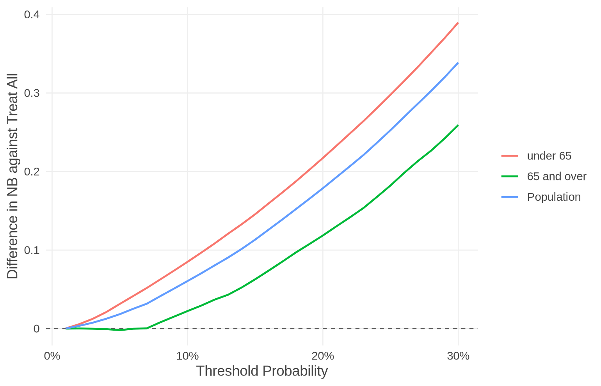
At 3% to 6%, the model is better than treat all in one age group and worse in the other, so Step 3 is needed there; at the other thresholds the signs agree, and differences in between the age groups cannot change the conclusion.
Step 3. The K-values at these thresholds range from 0.0023 to 0.039: the conclusion would change only if in patients 65 and over were 26 to 426 times that in younger patients, so it is robust to plausible differences between the age groups. With evidence on , give it as k (the values below are hypothetical, for illustration only); diff_utility is then the utility-weighted difference, and consistent says whether population net benefit and population utility favour the same strategy. plot(type = "region") locates the observed point relative to the inconsistency region at one threshold, as in Wang et al. (2026):
summary(res_age, thresholds = opp$threshold,
k = c(`under 65` = 0.30, `65 and over` = 0.20))
#> Net benefit of Full: binary, n = 5000, 339 events (6.8%), prior improper Beta(0, 0)
#> Best strategy: Full 0.01-0.30
#> Largest delta_NB: Full 0.02939 at 0.07
#>
#> threshold model Se Sp NB_model NB_all NB_none delta_NB
#> 0.03 Full 0.914 0.463 0.04653 0.03897 0 0.00756
#> 0.04 Full 0.858 0.571 0.04153 0.02896 0 0.01258
#> 0.05 Full 0.805 0.644 0.03716 0.01874 0 0.01842
#> 0.06 Full 0.749 0.711 0.03360 0.00830 0 0.02531
#>
#> Subgroups (age_group): under 65 (61%), 65 and over (39%); difference in net benefit (diff_NB) against Treat All
#> opposite signs at 0.03-0.06
#> K-value (k_under 65 / k_65 and over): 0.002349 to 0.03899
#> with k, population NB and population utility favour the same strategy at every threshold
#>
#> threshold model diff_NB_under 65 diff_NB_65 and over diff_NB_population
#> 0.03 Full 0.01249 -0.000132 0.00756
#> 0.04 Full 0.02108 -0.000704 0.01258
#> 0.05 Full 0.03144 -0.001914 0.01842
#> 0.06 Full 0.04161 -0.000153 0.02531
#> signs K diff_utility consistent
#> opposite 0.00677 0.002273 TRUE
#> opposite 0.02140 0.003800 TRUE
#> opposite 0.03899 0.005601 TRUE
#> opposite 0.00235 0.007598 TRUE
plot(res_age, type = "region", threshold = z_opp,
k = c(`under 65` = 0.30, `65 and over` = 0.20))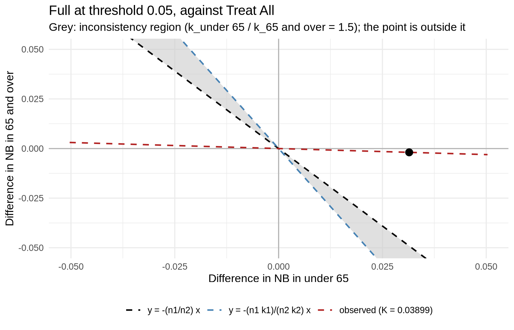
6.3 From published results
Without patient data, k_value() computes the K-value from published subgroup differences in net benefit. In the case study of Wang et al. (2026), SCORE2 at a 3% threshold had a difference against treat all of in men and in women (equal proportions assumed), and LDL-lowering therapy has RRRs of 0.28 in men and 0.15 in women:
k_value(c(Men = -0.0016, Women = 0.00345), k = c(Men = 0.28, Women = 0.15))
#> Subgroup difference in net benefit (diff_NB): Men -0.00160, Women 0.00345 (opposite signs)
#> Shares: Men 50%, Women 50%
#> K-value (k_Men / k_Women): 2.156
#> Population NB and population utility favour different strategies if k_Men / k_Women is beyond 2.156 (above it when k_Men > k_Women, below it when k_Men < k_Women).
#> With k: k_Men / k_Women = 1.867, so population NB and population utility favour the same strategy.The evidence-based ratio, 1.867, is below the K-value of 2.156, so population net benefit and population utility favour the same strategy, as in the paper.
6.4 Interpreting conflicting signs
Following Wang et al. (2026): when the subgroup estimates are precise, the subgroup conclusions may themselves be informative; when they are imprecise, the population-level decision curve analysis remains a reasonable starting point, but opposite signs are a warning that motivates Step 3. If the observed point falls in the inconsistency region, population net benefit should not be interpreted as a proxy for population utility. A negative subgroup difference may also come from miscalibration, which recalibration would be expected to remove (Van Calster and Vickers 2015); the framework is for assessing the available evidence when the model cannot be updated.
Options. summary() and plot() take comparator ("Treat All" by default, as in the case study; "Treat None", "best default" or another model), shares (the subgroup proportions in the target population, by default those of the sample) and k. With more than two subgroups there is no single K-value; give values or ranges for every subgroup, e.g. k = list(A = c(0.2, 0.3), B = c(0.1, 0.2), C = c(0.2, 0.4)), and summary() checks whether the utility-weighted sum can change sign. For survival outcomes, each subgroup uses the same estimator (Kaplan-Meier, or cIPCW with the censoring weights of the whole sample); the checks use the size-weighted sum. Credible intervals are not available with subgroups.
7 Reporting the results
For binary and survival outcomes alike.
7.1 Net benefit per 100,000 patients
Net benefit, EVPI and EVSI are per patient, so their values are small. print(), summary(), plot() and as.data.frame() take per, the number of patients to express them per (default 1), e.g. per = 100000; the headers and the y axes say the scale, and the results themselves stay per patient. The default can be set once with options(voipred.per = 100000).
summary(e, thresholds = c(0.02, 0.05, 0.1, 0.2), per = 100000)
#> EVPI: Full, Age only; binary, n = 500, prior improper Beta(0, 0), 5000 posterior draws, per 100,000 patients
#> EVPI > 0 at 0.03-0.30; largest 219.3 at 0.06
#>
#> threshold EVPI rEVPI
#> 0.02 0.0 1.000
#> 0.05 209.6 1.101
#> 0.10 94.0 1.061
#> 0.20 44.2 1.082
plot(res, evpi = e, evsi = o, per = 100000)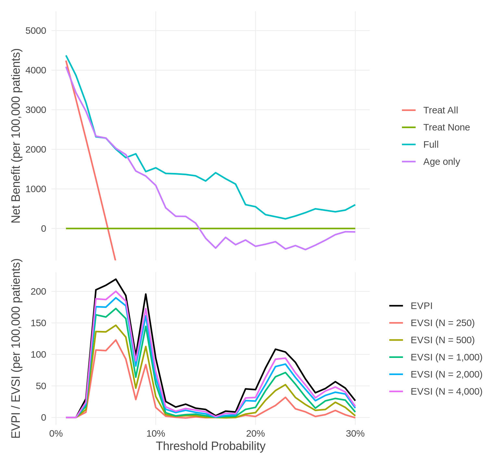
7.2 Results as data frames
as.data.frame() gives the full results, with fixed column names and one row per threshold (and per model, strategy or future sample size):
| Data frame | Columns |
|---|---|
as.data.frame(res) |
threshold, model, NB_model, NB_all, NB_none, delta_NB
|
as.data.frame(e) |
threshold, ENB_current, ENB_perfect, EVPI, rEVPI
|
as.data.frame(e$p_useful) |
threshold, model, p_useful
|
as.data.frame(e$p_best) |
threshold, strategy, p_best
|
as.data.frame(o) |
threshold, future_n, EVSI, EVPI
|
With per, the per-patient columns are kept and the scaled ones added (e.g. EVPI_per_100000). As the tables share threshold (and model), they can be combined, e.g. into one table per threshold and model for a report:
d <- merge(as.data.frame(res)[, c("threshold", "model", "NB_model", "delta_NB")],
as.data.frame(e$p_useful), by = c("threshold", "model"))
d <- merge(d, as.data.frame(e, per = 100000)[, c("threshold", "EVPI_per_100000")],
by = "threshold")
d[round(d$threshold, 2) %in% c(0.02, 0.05, 0.1), ]
#> threshold model NB_model delta_NB p_useful EVPI_per_100000
#> 3 0.02 Age only 0.03432653 0.001673469 0.8480 0.00000
#> 4 0.02 Full 0.03869388 0.006040816 1.0000 0.00000
#> 9 0.05 Age only 0.02284211 0.020736842 0.9964 209.64234
#> 10 0.05 Full 0.02284211 0.020736842 0.9984 209.64234
#> 19 0.10 Age only 0.01088889 0.010888889 0.9188 94.00733
#> 20 0.10 Full 0.01533333 0.015333333 0.9890 94.00733Thresholds made with seq() are not exact decimals, so select them with round(), as above. The plots take labels (other names for the curves), colors (e.g. colors = c(Full = "darkred")) and interactive = TRUE (with the plotly package).
8 Credible intervals
For binary and survival outcomes alike.
nb_val() can also give credible intervals of the net benefit, with interval = 0.95 (from n_sim draws, as in Section 4.3). We do not recommend them for deciding whether to use a model: an interval shows the uncertainty of each net benefit on its own, while the decision depends on which strategy is best, and on whether more data could change that choice, which is what EVPI, P(useful) and P(best) measure (see also Vickers et al. (2023)). For this reason, nb_val() and every method that shows the intervals give a warning.
set.seed(1)
res_int <- nb_val(data = val, predicted_risk = "p_full", outcome = "day30",
thresholds = seq(0.01, 0.30, by = 0.01), label = "Full",
interval = 0.95)
#> Warning: Credible intervals show the uncertainty of each net benefit on its
#> own, which is not a good measure of the uncertainty that matters for choosing a
#> strategy. We suggest value-of-information analysis: evpi() gives EVPI,
#> P(useful) and P(best).
summary(res_int, thresholds = c(0.05, 0.1, 0.2))
#> Net benefit of Full: binary, n = 500, 26 events (5.2%), prior improper Beta(0, 0); 95% credible intervals from 1000 posterior draws
#> Best strategy: Full 0.01-0.30
#> Largest delta_NB: Full 0.02074 at 0.05
#>
#> threshold model Se Sp NB_model 95% CrI NB_all NB_none
#> 0.05 Full 0.769 0.656 0.02284 (0.00658, 0.04134) 0.0021 0
#> 0.10 Full 0.577 0.861 0.01533 (0.00067, 0.03213) -0.0533 0
#> 0.20 Full 0.269 0.964 0.00550 (-0.00421, 0.01749) -0.1850 0
#> delta_NB 95% CrI
#> 0.02074 (0.00580, 0.02708)
#> 0.01533 (0.00067, 0.03213)
#> 0.00550 (-0.00421, 0.01749)
plot(res_int, type = "delta", bands = TRUE)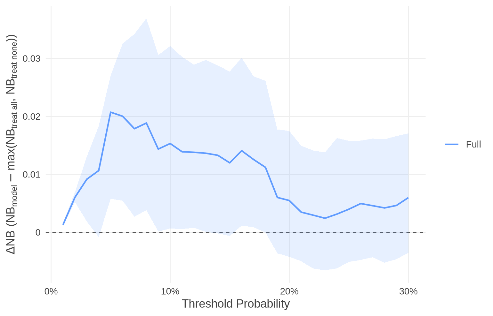
print() and summary() show each interval after its estimate, as.data.frame() has the bounds (NB_model_lower, NB_model_upper, …), and plot(bands = TRUE) draws them as bands (the default plot has none; for a result without intervals, bands = TRUE gives an error). For survival outcomes, the intervals come from the Bayesian bootstrap.
9 Choosing the options
| Choice | Argument | Recommendation |
|---|---|---|
| Thresholds |
thresholds in nb_val()
|
the range of thresholds that are clinically reasonable for the decision |
| Several models | predicted_risk = list(...) |
compare them in one call, on the same patients |
| Prior |
prior in nb_val()
|
the default (no prior information); nb_informative() for small effective sample sizes, reported with and without it |
| Censoring |
cipcw in nb_val()
|
Kaplan-Meier (default) when censoring is unrelated to the outcome; cipcw = ~ covariates when it may depend on them |
| Number of draws |
n_sim in evpi(), evsi()
|
1,000 (default); more (e.g. 5,000) for stable results at thresholds with little data; set a seed |
| Future study sizes |
future_n in evsi()
|
sizes that could realistically be collected |
| Scale |
per in print(), summary(), plot(), as.data.frame()
|
e.g. 100,000 for reporting |
| Case weights |
weights in nb_val()
|
for samples that do not represent the target population in equal proportions (e.g. oversampled events): the inverse of the sampling probability |
| Credible intervals |
interval in nb_val()
|
not needed for the decision; use the value of information measures |
| Subgroups |
subgroup in nb_val(); k, comparator, shares in summary()
|
for clinically relevant subgroups that are large or may differ in (e.g. treatment effect) |
The help pages give the details of every function and argument (see the Reference).
10 References
Cruz, Giuliano Netto Flores, and Keegan Korthauer. 2025. “Bayesian Decision Curve Analysis with bayesDCA.” Statistics in Medicine.
Farahmand, Amirhosein, Mohsen Sadatsafavi, Abdollah Safari, and Tae Yoon Lee. 2026. “Robust Decision Curve Analysis for Survival Risk Prediction Models in the Presence of Informative Censoring.” Under review at Statistics in Medicine.
Royston, Patrick, and Douglas G. Altman. 2013. “External Validation of a Cox Prognostic Model: Principles and Methods.” BMC Medical Research Methodology 13: 33.
Rubin, Donald B. 1981. “The Bayesian Bootstrap.” The Annals of Statistics 9 (1): 130–34.
Sadatsafavi, Mohsen et al. 2025. “Expected Value of Sample Information Calculations for Risk Prediction Model Validation.” Medical Decision Making 45 (3): 232–44.
Sadatsafavi, Mohsen, Tae Yoon Lee, Laure Wynants, Andrew J. Vickers, and Paul Gustafson. 2023. “Value-of-Information Analysis for External Validation of Risk Prediction Models.” Medical Decision Making 43 (5): 564–75.
The GUSTO Investigators. 1993. “An International Randomized Trial Comparing Four Thrombolytic Strategies for Acute Myocardial Infarction.” New England Journal of Medicine 329 (10): 673–82.
Van Calster, Ben, and Andrew J. Vickers. 2015. “Calibration of Risk Prediction Models: Impact on Decision-Analytic Performance.” Medical Decision Making 35 (2): 162–69.
Vickers, Andrew J., Angel M. Cronin, Elena B. Elkin, and Mithat Gonen. 2008. “Extensions to Decision Curve Analysis, a Novel Method for Evaluating Diagnostic Tests, Prediction Models and Molecular Markers.” BMC Medical Informatics and Decision Making 8: 53. https://doi.org/10.1186/1472-6947-8-53.
Vickers, Andrew J., and Elena B. Elkin. 2006. “Decision Curve Analysis: A Novel Method for Evaluating Prediction Models.” Medical Decision Making 26 (6): 565–74. https://doi.org/10.1177/0272989X06295361.
Vickers, Andrew J., Ben Van Calster, and Ewout W. Steyerberg. 2019. “A Simple, Step-by-Step Guide to Interpreting Decision Curve Analysis.” Diagnostic and Prognostic Research 3: 18. https://doi.org/10.1186/s41512-019-0064-7.
Vickers, Andrew J., Ben Van Calster, Laure Wynants, and Ewout W. Steyerberg. 2023. “Decision Curve Analysis: Confidence Intervals and Hypothesis Testing for Net Benefit.” Diagnostic and Prognostic Research 7: 11.
Wang, Junfeng, Kim Zhipei Wang, Ben Van Calster, Nan van Geloven, Ewout Steyerberg, and Laure Wynants. 2026. “Population-Level Decision Curve Analysis May Mislead the Evaluation of Prediction Model Usefulness Under Subgroup Utility Heterogeneity.” arXiv preprint arXiv:2609.34521. https://arxiv.org/abs/2609.34521.
Wynants, Laure, Richard D. Riley, Dirk Timmerman, and Ben Van Calster. 2018. “Random-Effects Meta-Analysis of the Clinical Utility of Tests and Prediction Models.” Statistics in Medicine 37 (12): 2034–52. https://doi.org/10.1002/sim.7653.